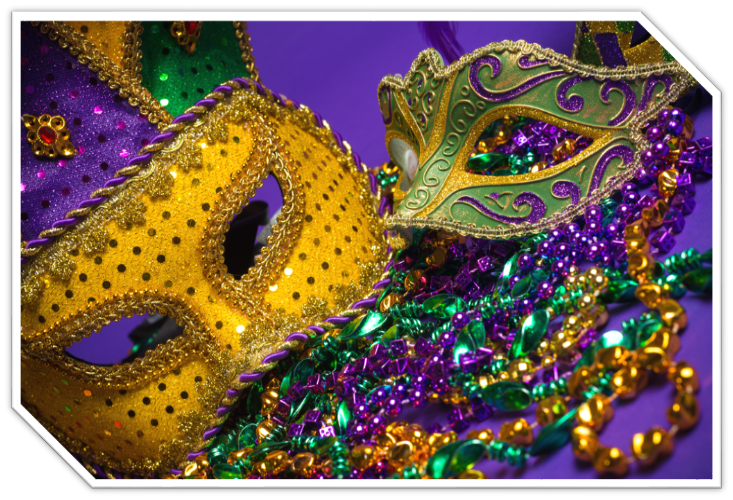

Learn The Lingo
Mardi Gras: This is French for "Fat Tuesday," a refernce to the fact that Mardi Gras always is the day before Ash Wednesday, the beginning og Lent in the Catholic Faith.
Carnival: Refers to the days that lead up to Fat Tuesday
Krew: This is a carnival organization made up of members
who plan and carry out the varous themed parades and balls.
Throws:Are the common strings of plastic beads that parade
goers love to collect and wear around their necks as "trophies."
Purple, Green, and Gold are the three official colors of Mardi Gras
that you are bound to see everywhere.

Here are a few pictures that will give you a better picture of what Texas Mardi Gras is all about!